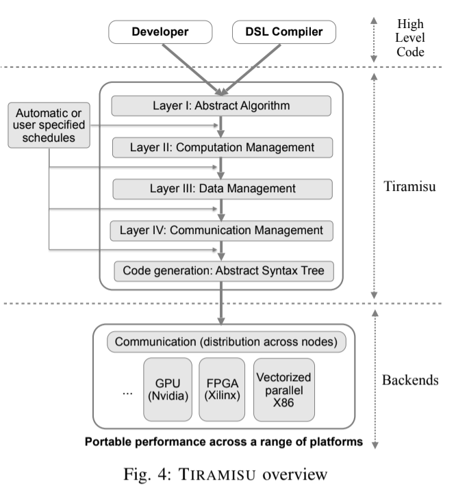

|
Research
I'm interested in application of machine learning to computational structural biology, programming language (domain specific language), distributed systems, search/path planning, and high-performance computing. Much of my research is about making things run faster.
|
|

|
TIRAMISU: A Polyhedral Compiler for Expressing Fast and Portable Code
Riyadh Baghdadi , Jessica Ray, Malek Ben Romdhane, Emanuele Del Sozzo, Abdurrahman Akkas, Yunming Zhang, Patricia Suriana, Shoaib Kamil, and Saman Amarasinghe
CGO, 2019
bibtex
A polyhedral framework designed to generate high performance code for multiple platforms including multicores, GPUs, and distributed machines.
|
|
|
Parallel Associative Reductions in Halide
Patricia Suriana, Andrew Adams, Shoaib Kamil
CGO, 2017
bibtex
A new Halide scheduling directive that permits parallelization or vectorization of Halide algorithms (reductions) which were previously inherently serial.
|
|